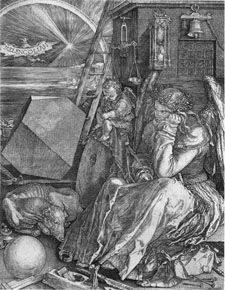
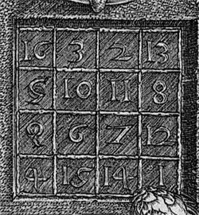

¿Sabes lo que es un cuadrado mágico? Es un cuadrado de números en el que al sumar todos los números que están en la misma fila, en la misma columna o en las dos diagonales, principal y secundaria, el resultado obtenido es siempre el mismo y recibe el nombre de número mágico. Los cuadrados mágicos pueden encontrarse en el arte, como en el cuadro Melancolía de Alberto Durero que puedes ver abajo. Aparece un cuadrado mágico de orden 4, que te presentamos en detalle para que puedas observarlo. También puedes encontrar otro, creado por Gaudí, en la fachada de La Sagrada Familia de Barcelona.
 |
 |
En este tema vamos a hacer algo similar. Queremos reducir toda la información que hay en una matriz a un solo valor, que va a recibir el título de determinante de la matriz.
Curiosidad
Aunque pueda parecer increíble, el concepto de determinante es anterior al de matriz.
Aunque los inicios de la idea de determinante se remontan a los matemáticos chinos del siglo II a. de C., el concepto moderno de determinantes apareció simultáneamente en Japón y en Europa en el siglo XVII. El primer trabajo publicado sobre este tema es de 1683 por el matemático japonés Takakasu Seki, aunque el mismo año aparece la idea de determinante en una carta de Leibniz al Marqués de L'Hôpital.
Sin embargo, el primero que utiliza el término determinante en el sentido tal como lo vamos a ver en este tema, es el matemático francés Agustín Luis Cauchy, en un artículo publicado en 1812.